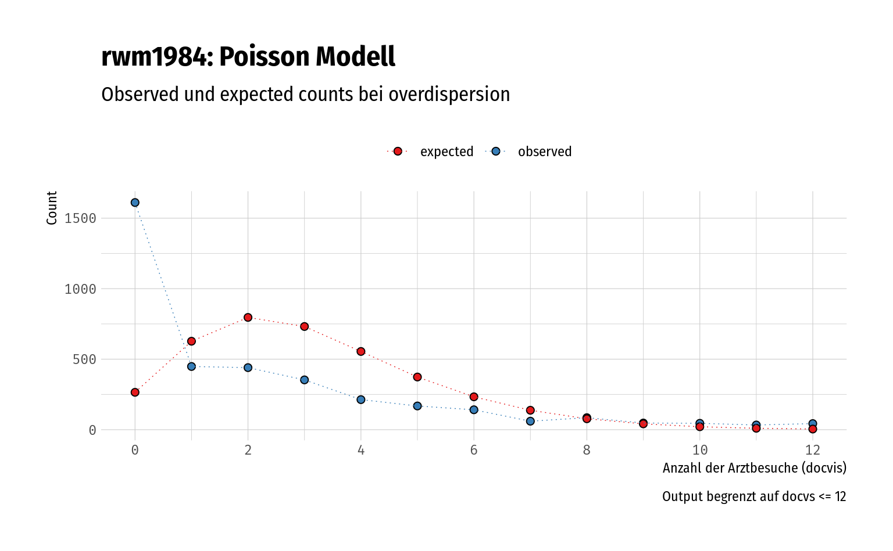

Kapitel 5 Anwendung
Als Beispiel verwenden wir hier rwm1984, ein Subset des Datensatz rwm5yr (vgl. Abschnitt 1.1, ?COUNT::rwm1984), der Angaben zur Anzahl der Arztbesuche pro Person mit zusätzlichen demographischen Merkmalen enthält. Für unser Beispielmodell verwenden wir folgende Variablen:
docvis: Abhängige Variable, Anzahl der Arztbesuche im Jahr (0-121)outwork: Arbeitslos (1), arbeitend (0)age: Alter (25 - 64)
# Daten
data(rwm1984, package = "COUNT")
# Model fit
mod_rwm <- glm(docvis ~ outwork + age, family = poisson(), data = rwm1984)
# Summary display
pander(summary(mod_rwm))| Estimate | Std. Error | z value | Pr(>|z|) | |
|---|---|---|---|---|
| (Intercept) | -0.03352 | 0.03918 | -0.8554 | 0.3923 |
| outwork | 0.4079 | 0.01884 | 21.65 | 6.481e-104 |
| age | 0.02208 | 0.0008377 | 26.36 | 3.73e-153 |
(Dispersion parameter for poisson family taken to be 1 )
| Null deviance: | 25791 on 3873 degrees of freedom |
| Residual deviance: | 24190 on 3871 degrees of freedom |
Das erste was wir zur Evaluation unseres Modells tun können, ohne direkt andere Modelle zum vergleich heranzuziehen, ist die beobachteten Counts und die auf Basis des Modells erwarteten Counts zu vergleichen, um ein grobes Gefühl für die Situation zu erhalten (Code frei adaptiert nach Hilbe (2014), p. 88f):
# Beobachtete und erwartete counts
observed_v_expected <- rwm1984 %>%
count(docvis, name = "observed") %>%
mutate(
expected = purrr::map_dbl(docvis, ~{
dpois(.x, fitted(mod_rwm)) %>%
sum() %>%
round(2)
}),
difference = observed - expected
)
observed_v_expected %>%
head(5) %>%
pander(caption = "Observed and expected counts")| docvis | observed | expected | difference |
|---|---|---|---|
| 0 | 1611 | 264.8 | 1346 |
| 1 | 448 | 627.1 | -179.1 |
| 2 | 440 | 796 | -356 |
| 3 | 353 | 731.6 | -378.6 |
| 4 | 213 | 554.6 | -341.6 |
# Mittelwert und Varianz der jeweiligen counts
# (für "expected" gilt Varianz := Mittelwert)
tribble(
~Counts, ~Mean, ~Variance,
"observed", mean(rwm1984$docvis), var(rwm1984$docvis),
"expected", mean(fitted(mod)), mean(fitted(mod))
) %>%
pander(caption = "Mean & variance of observed and expected counts")| Counts | Mean | Variance |
|---|---|---|
| observed | 3.163 | 39.39 |
| expected | 5.401 | 5.401 |
# Plot: observed vs. expected counts
observed_v_expected %>%
filter(docvis <= 12) %>%
gather(type, count, observed, expected) %>%
ggplot(aes(x = docvis, y = count, fill = type, color = type)) +
geom_point(shape = 21, color = "black", stroke = .5, size = 2) +
geom_path(linetype = "dotted", size = .25) +
scale_x_continuous(breaks = seq(0, 12, 2)) +
scale_fill_brewer(palette = "Set1", aesthetics = c("color", "fill"), name = "") +
labs(
title = "rwm1984: Poisson Modell",
subtitle = "Observed und expected counts bei overdispersion",
caption = "Output begrenzt auf docvs <= 12",
x = "Anzahl der Arztbesuche (docvis)", y = "Count"
) +
theme(legend.position = "top")
Anhand der ersten Tabelle können wir recht schnell erkennen, dass wir hier deutlich mehr Nullen beobachten als das Modell vorhersagt – mehr dazu in Abschnitt 5.2.
Der Plot veranschaulicht den eher suboptimalen model fit unter diesen Umständen (overdispersion & zero-inflation).
5.1 Overdispersion: Erkennung und Handhabung
Der Score-Test wird nicht unbedingt empfohlen, findet sich aber in der Literatur:
Definition 5.1 (Score-Test auf Overdispersion) Nach Hilbe (2014) (p. 85f):
Sei \(Y\) die abhängige Variable und \(y_i\) die \(i-te\) Beobachtung, mit \(\hat{\mu}_i\) als gefitteter Wert eines Poisson-Modells, dann wird der z-Score wie folgt berechnet:
Zur Evaluation von \(z\) wird z.B. ein Intercept-only Regressionsmodell mit \(z\) als abhängiger Variable gefitted, mit der Nullhypothese “Es liegt keine Overdispersion vor”.
Dabei gelten folgende Annahmen:
- Die Stichprobe ist groß
- \(z\) ist t-verteilt
Definition 5.2 (Lagrange Multiplier Test) Nach Hilbe (2014) (p. 85f):
Eine \(\chi^2\)-Teststatistik mit einem Freiheitsgrad.
Eine rudimentäre R-Implementation findet sich in Abschnitt 1.2.2.
5.1.1 (Boundary) Likelihood Ratio Test (BLR)
Zum vergleich von zwei geschachtelten (nested) Modellen kann der Likelihood Ratio Test verwendet werden:
Definition 5.3 (Likelihood Ratio Test) \[\begin{equation} LR = -2 (\mathcal{L}_R - \mathcal{L}_F) \end{equation}\]
Mit \(\mathcal{L}_F\) als log-likelihood des vollen (oder “größeren”) Modells, und \(\mathcal{L}_R\) als log-likelihood des reduzierteren Modells.Eine Variante des Tests kann verwendet werden, um den Dispersionsparameter \(\alpha\) eines NB-Modells zu testen. Da eine NB-Verteilung für \(\alpha = 0\) äquivalent zur Poisson ist (siehe Abschnitt 3.1), kann ein Poisson-Modell als reduzierte Variante eines NB-Modells betrachtet werden. In diesem Fall verwendet man den Boundary Likelhihood Ratio test:
It is important, though, to remember that the BLR test has a lower limiting case for the value of \(\alpha\), which is what is being tested. Given that the standard parameterization of the negative binomial variance function is \(\mu + \alpha \mu^2\) , when \(\alpha = 0\), the variance reduces to \(\mu\).
— Hilbe (2014), p. 115
Der resultierende Wert ist \(\chi^2_{(1)}\)-verteilt. Der resultierende p-Wert muss zusätzlich halbiert werden (siehe Hilbe 2014, p. 115).
Since the distribution being tested can go no lower than 0, that is the boundary. Only one half of the full distribution is used. Therefore the Chi2 (sic!) test is divided by 2
— Hilbe (2014), p. 115
Am Beispiel der rwm1984-Daten:
# Poisson-Modell
mod_p <- glm(docvis ~ outwork + age, family = poisson(), data = rwm1984)
# NB-Modell
mod_nb <- MASS::glm.nb(docvis ~ outwork + age, data = rwm1984)
# BLR: Recht eindeutig.
lmtest::lrtest(mod_p, mod_nb)| #Df | LogLik | Df | Chisq | Pr(>Chisq) |
|---|---|---|---|---|
| 3 | -15636.390 | NA | NA | NA |
| 4 | -8332.762 | 1 | 14607.26 | 0 |
# Bei gegebenem BLR-Wert von 4.2 ließe sich der p-Wert wie folgt berechnen:
pchisq(4.2, df = 1, lower.tail = FALSE) / 2#> [1] 0.02021199#> [1] 0.020211995.1.2 Umgang mit Overdispersion
Zur expliziten Modellierung des Dispersionparameters kann ein NBH Modell (4.1.1) genutzt werden, falls die Quelle der overdispersion von besonderem Interesse ist.
Abseits davon bleiben 2 grobe Strategien :
- Adjustierung der durch die overdispersion verzerrten Standardfehler (Quasipoisson, Quasi-Likelihood, robuste Varianzschätzer)
- Wechsel auf ein Modell, das overdispersion (oder allgemeine extradispersion) erlaubt (e.g. NB)
(Bemerke: Standardfehler für IRRs werden i.A. über die delta method bestimmt, die ich noch recherchieren und irgendwo einbauen muss)
Quasipoisson: Skalierung der Standardfehler
Hier werden lediglich die Standardfehler der Koeffizienten eines Poisson-Modells adjustiert, die bei overdispersion i.d.R. unterschätzt werden – die eigentliche Parameterschätzung wird nicht beeinflusst:
\[\mathrm{SE}(\beta_k) \cdot \sqrt{D}\] Wobei \(D\) der Pearson-Dispersionsindex ist (vgl. Hilbe (2014), p. 92ff), den wir in 2.5 als \(\frac{\chi^2_{\mathrm{Pearson}}}{\mathrm{df}}\) definiert hatten.
Ein möglicher Nachteil jedoch: Es wird zuerst ein reguläres Poisson-Modell gefittet, Standardfehler und Dispersionsindex bestimmt, und dann dasselbe Modell mit skalierten Standardfehlern erneut gefittet – dementsprechend ist diese Methode vermutlich für größere Datensätze eher ineffizient.
Einmal auf unser voriges Beispiel anhand der rwm5yr-Daten angewandt:
# Urprüngliches Model
mod <- glm(docvis ~ outwork + age, family = poisson(), data = rwm1984)
mod_qp <- glm(docvis ~ outwork + age, family = quasipoisson(), data = rwm1984)
dispersion(mod)#> X-squared(3871) = 43909.62
#> Pearson Dispersion = 11.343#> X-squared(3871) = 43909.62
#> Pearson Dispersion = 11.343An der Dispersion hat sich nichts geändert, nur an den Standardfehlern der Koeffizienten (in folgenden Tabellen auf log-Skala):
| Estimate | Std. Error | z value | Pr(>|z|) | |
|---|---|---|---|---|
| (Intercept) | -0.03352 | 0.03918 | -0.8554 | 0.3923 |
| outwork | 0.4079 | 0.01884 | 21.65 | 6.481e-104 |
| age | 0.02208 | 0.0008377 | 26.36 | 3.73e-153 |
| Estimate | Std. Error | t value | Pr(>|t|) | |
|---|---|---|---|---|
| (Intercept) | -0.03352 | 0.132 | -0.254 | 0.7995 |
| outwork | 0.4079 | 0.06347 | 6.427 | 1.457e-10 |
| age | 0.02208 | 0.002821 | 7.827 | 6.386e-15 |
In diesem Fall “lohnt” sich dieser Ansatz zwar eher nicht, da wir neben overdispersion noch ein Problem mit zero-inflation haben, aber in manchen Fällen kann Quasipoisson-Methode ausreichen.
“Scaling is an easy, quick-and-dirty method of adjusting standard errors for overdispersion. However, when data are highly correlated or clustered, model slopes or coefficients usually need to be adjusted as well. Scaling does not accommodate that need, but simulations demonstrate that it is quite useful for models with little to moderate overdispersion.”
— Hilbe (2014) (p. 96)
5.1.2.1 Robuste Varianzschätzer (Sandwich Estimators)
(Andere Namen: Huber & White standard errors, empirical standard errors)
Sandwich estimators sind in erster Linie für nicht unabhängige bzw. korrellierte Daten gedacht, zum Beispiel für Daten, die innerhalb mehrere Haushalte, Krankenhäuser, Städte etc. gesammelt wurden.
Robuste Varianzschätzer können (und je nach Quelle: sollten) standardmäßig für Count-response Daten verwendet werden, da die resultierenden Schätzer im Falle tatsächlich unkorrellierter Daten äquivalent zu den Standardfehlern des ursprünglichen Modells sind (i.e. “schadet nicht”).
Bootstrapped SEs wiederum erfordern mehr Aufwand, ähneln aber den robusten SEs sowieso sehr stark, weshalb sich der Aufwand ggf. nicht wirklich lohnt.
Siehe Hilbe (2014) (p. 99f) für eine ausführlichere Beschreibung. Zudem gibt der Autor explizit den Rat:
“Unless your Poisson or negative binomial model is well fitted and meets its respective distributional assumptions, use robust or empirical standard errors as a default”
— Hilbe (2014) (p. 133)
5.2 Zero-Inflation (ZI)
Problem: “Excess zeros”, i.e. das Modell sagt für \(P(y_i = 0\ |\ x_i)\) eine deutlich kleinere Wahrscheinlichkeit vor, als in gegebenen Daten tatsächlich vorliegen.
Zero-inflation hängt eng mit overdispersion zusammen. Sie kann Ursache für overdispersion sein, allerdings bedeutet das nicht direkt, dass auch ein entsprechend auf ZI-fokussiertes Modell (ZIP, ZINB…) verwendet werden muss – ggf. lässt sich die overdispersion bereits durch ein anderes geeignetes Modell “auffangen”. Zum Beispiel zeigt Winkelmann (2010), dass die NB allgemein eine größere Anzahl an Nullen erwartet als die Poisson.

Vergleich von Zero-Inflated models
Zum Vergleich zwischen Zählmodellen und ihren zero-inflated Gegenstücken (e.g. Poisson vs. ZIP oder NB vs. ZINB) wird in der Literatur häufig der Vuong-Test (Vuong 1989; Desmarais und Harden 2013) verwendet. Dieser Test ist explizit für den Vergleich von ungeschachtelten Modellen entworfen (im Gegensatz zu z.B. dem Likelihood Ratio test). Wilson (2015) kritisiert dieses Vorgehen mit der Begründung (und Demonstration), dass zero-inflated Modelle nicht ungeschachtelt mit ihren ursprünglichen Zähmodellen sind. Auch Perumean-Chaney u. a. (2013) und Hilbe (2014), die in diesem Dokument mehrfach zitiert werden, verwenden den Vuong-Test auf diese Weise.
Das Paper (Wilson (2015)) ist recht kurz und definitiv einen Blick Wert, insbesondere da ich (Lukas) mir bisher nicht zutraue zu beurteilen, wer in dieser Frage “Recht” hat.
The misuse of the test stems from misunderstanding of what is meant by the terms “non-nested model” and “nested model”. As is the case with many frequently used terms their meanings are approximately understood by many, but precisely understood by few.
— Wilson (2015), p. 52
Modellierung
Für die Modellierung von zero-inflated Daten stehen primär zwei Möglichkeiten zur Verfügung (vgl. auch Hilbe (2014), p. 19):
- Zero-inflated models: Mixture models, die aus zwei Wahrscheinlichkeitsfunktionen eine neue Wahrscheinlichkeitsfunktion generieren, die sowohl Nullen als auch positive counts beschreibt, allerdings nun auch einen zero-inflation-Parameter hat (siehe Abschnitt 4.2).
- Hurdle models: Getrennte Modellierung von Nullen und positiven counts in zwei separaten Modellen (siehe Abschnitt B.3).
Ob hurdle model oder zero-inflated model die bessere Wahl ist hängt mitunter davon ab, welche Annahmen über die Ursache der Nullen getroffen werden können.
Wenn es eine echte Trennung der Mechanismen (“separation of mechanisms”) gibt, die die Nullen und die positiven counts verursachen, dann wäre ein hurdle model eher angemessen.
Wenn sich die Nullen überlappen, es also keine getrennten Prozesse zu geben scheint, dann wären zero-inflated models angemessen (Hilbe 2014, p. 209).
Als Veranschaulichung für zwei sich überlappende Mechanismen können wir das fish-Beispiel auf dieser UCLA-Tutorialseite verwenden. Hier ist die Anzahl der gefangenen Fische an einem Wochenende in einem Park die Zählvariable.
| N | Missing | Mittelwert | Varianz | Range |
|---|---|---|---|---|
| 250 | 0 | 3.3 | 135.37 | [0, 149] |
# Barchart für counts <= 50, Spannweite sehr groß
fish %>%
filter(count <= 50) %>%
ggplot(aes(x = count)) +
geom_bar(alpha = .75) +
scale_x_continuous() +
labs(
title = "'fish': Anzahl gefangener Fische",
subtitle = "Limitiert auf counts unter 50",
x = "Anzahl gefangener Fischer", y = "Count"
)
Die Anzahl der Nullen ist hier auffallend groß – allerdings beobachten wir hier auch zwei unterschiedliche Mechanismen, die sich überlappen: Eine Gruppe kann das ganze Wochenende geangelt haben, während eine andere Gruppe gar nicht geangelt hat – beide Gruppen werden jedoch am Ende nach der Anzahl ihrer gefangenen Fische befragt, weshalb wir in den Daten Nullen mit unterschiedlichem “Ursprung” erhalten
Da es hier nicht angemessen wäre, die Nullen und die positiven counts getrennt zu Modellieren, würden wir hier ein zero-inflated Modell (z.B ZIP, ZINB, …) verwenden.
Literatur
Desmarais, Bruce A., und Jeffrey J. Harden. 2013. „Testing for Zero Inflation in Count Models: Bias Correction for the Vuong Test“. The Stata Journal 13 (4): 810–35. https://doi.org/10.1177/1536867X1301300408.
Hilbe, Joseph M. 2014. Modeling Count Data. Cambridge: Cambridge University Press. https://doi.org/10.1017/CBO9781139236065.
Perumean-Chaney, Suzanne E., Charity Morgan, David McDowall, und Inmaculada Aban. 2013. „Zero-Inflated and Overdispersed: What’s One to Do?“ Journal of Statistical Computation and Simulation 83 (9): 1671–83. https://doi.org/10.1080/00949655.2012.668550.
Vuong, Quang H. 1989. „Likelihood Ratio Tests for Model Selection and Non-Nested Hypotheses“. Econometrica 57 (2): 307. https://doi.org/10.2307/1912557.
Wilson, Paul. 2015. „The Misuse of the Vuong Test for Non-Nested Models to Test for Zero-Inflation“. Economics Letters 127 (Februar): 51–53. https://doi.org/10.1016/j.econlet.2014.12.029.
Winkelmann, Rainer. 2010. Econometric Analysis of Count Data. 5th ed. Berlin: Springer Berlin.